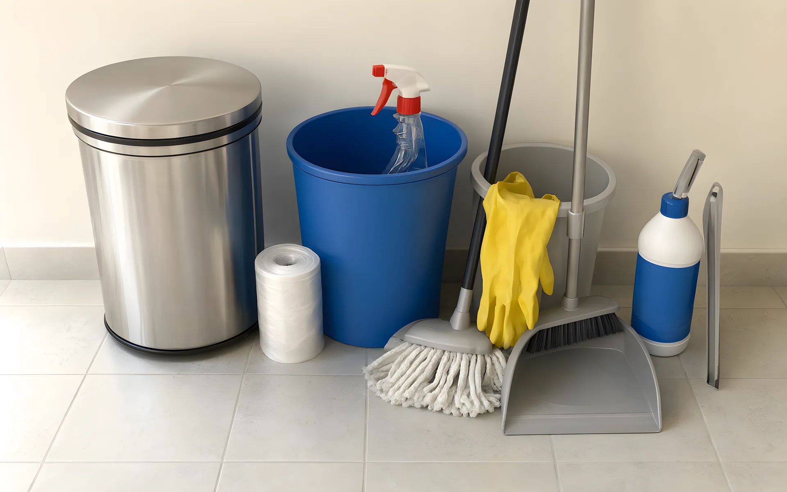
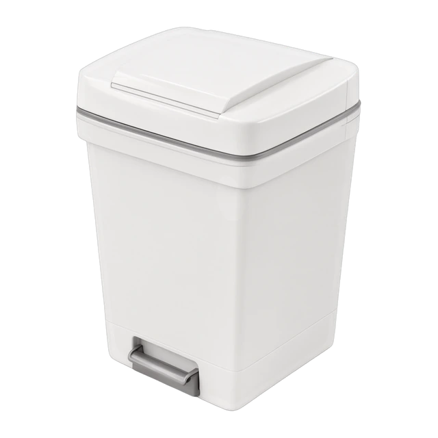
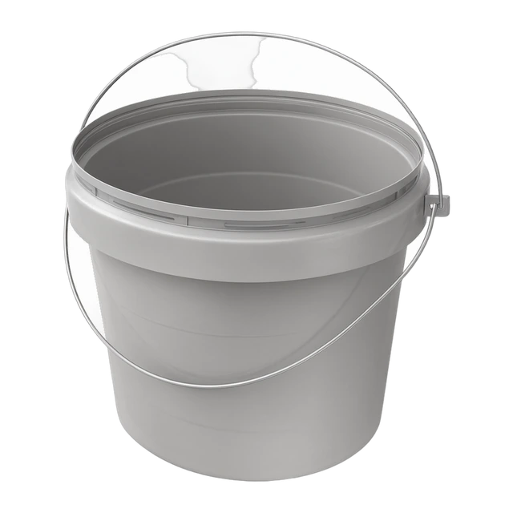
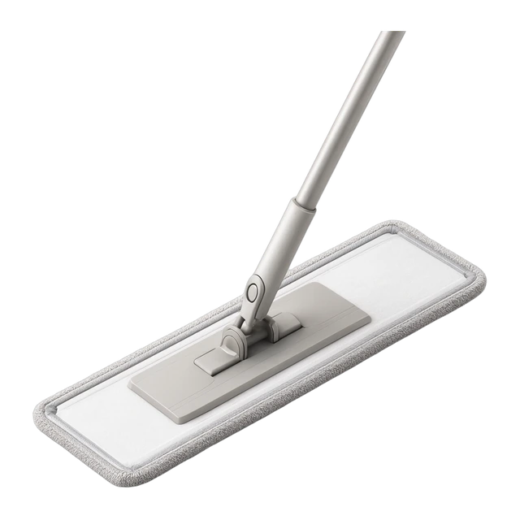
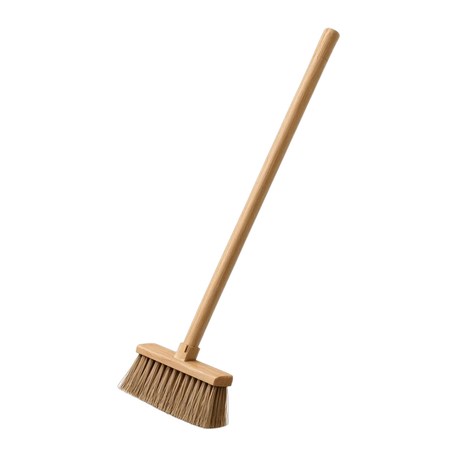
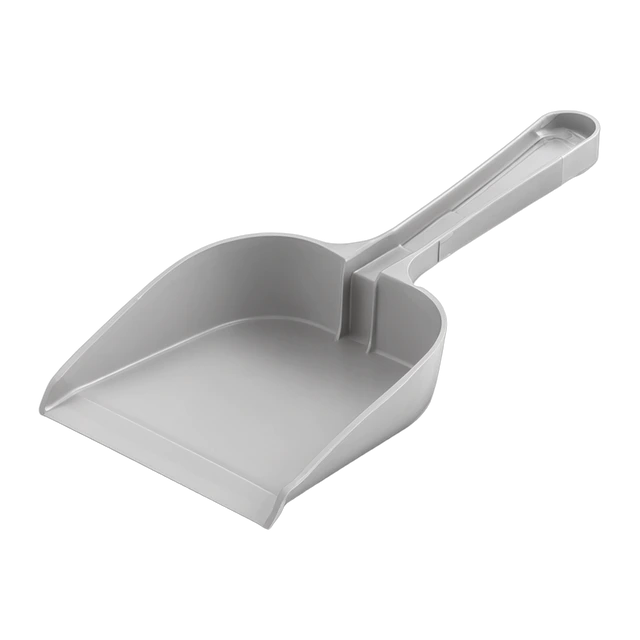

Cleaning
清洁角
场景
卡片
女声
男声

指到或点一下物品
再听一次
trash can
trash bags
recycling bin
cleaning spray
bucket
rubber gloves
mop
broom
dustpan
disinfectant
squeegee

trash can
垃圾桶
trash bags
垃圾袋
recycling bin
回收箱
cleaning spray
清洁喷雾

bucket
水桶
rubber gloves
橡胶手套

mop
拖把

broom
扫把

dustpan
簸箕
disinfectant
消毒液
squeegee
刮水器
‹ Storage 储物
厨房
Sink 水槽区 ›